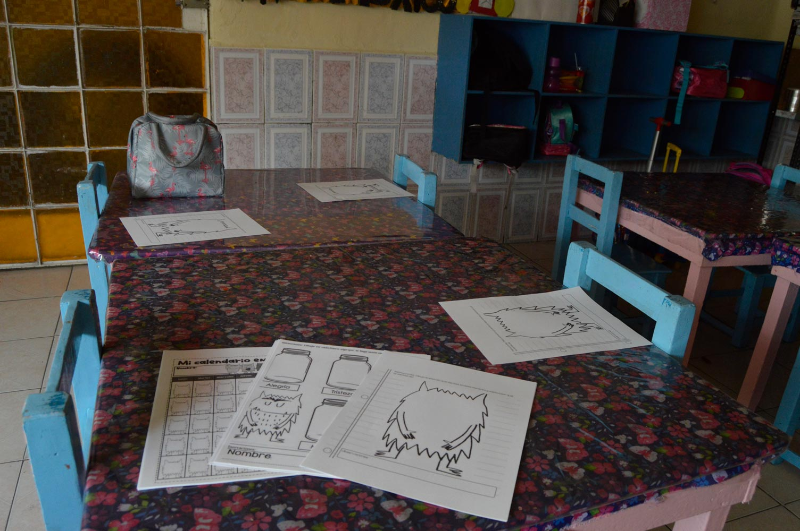
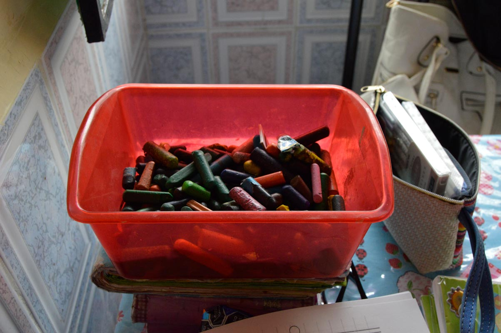
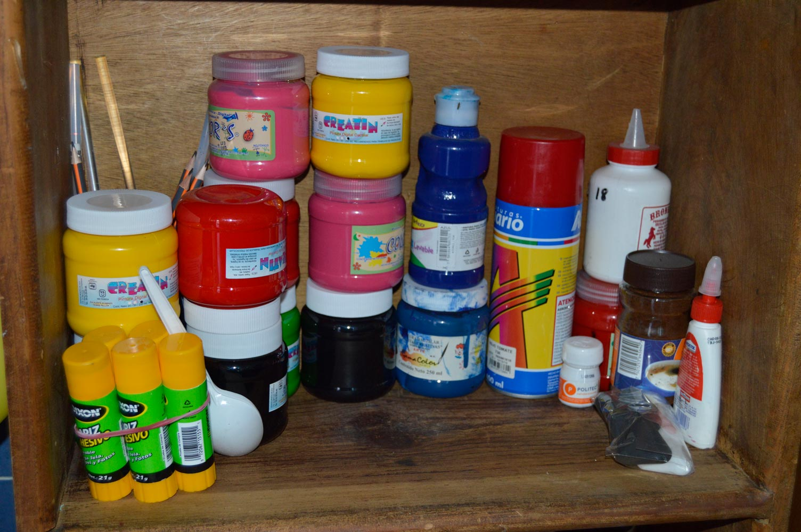
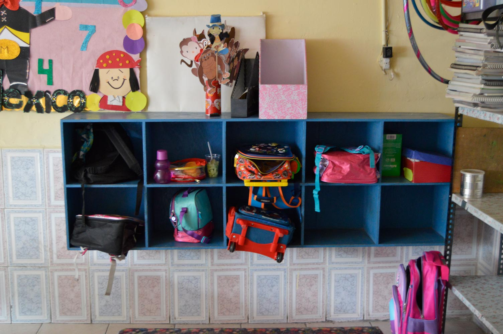
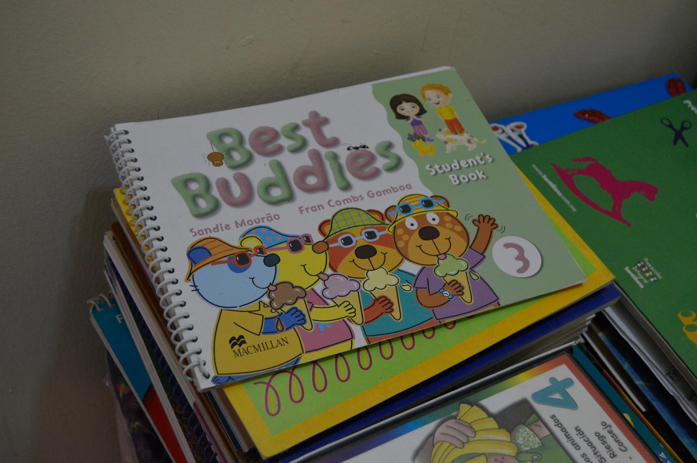
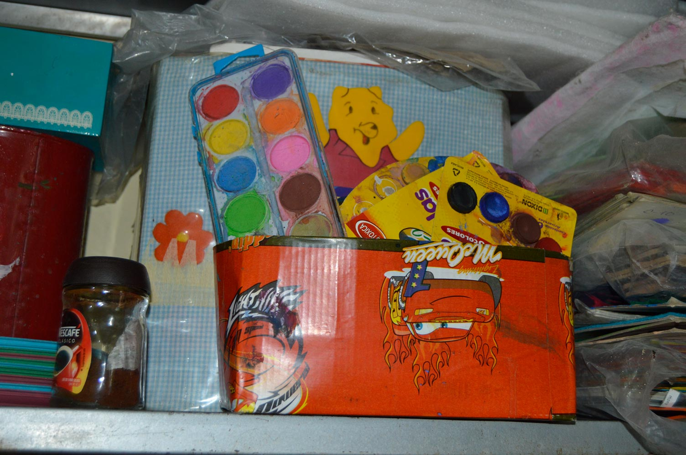

Jardín de Niños Citlali
Acerca de Nosotros
Somos una escuela de nivel preescolar ubicada en México, en la CDMX, Delegación: Gustavo A. Madero, Colonia: San Felipe de Jesús, comprometida con la enseñanza y desarrollo de los niños de entre 3-6 años. Y elaboramos/tenemos demasiadas técnicas didácticas, materiales, juegos, personal capacitado. Y todo lo necesario para que tú hijo aprenda y se desarrolle plenamente. Estamos comprometidos con el aprendizaje y estaremos feliz de darte un recorrido e información acerca de nuestra escuela
Te invitamos a que tú, Papito/Mamita de familia, explores un poco nuestro Sitio Web y observes todas las facilidades, infraestructura, juegos, material, inscripciones, etc. que ofrecemos en nuestro Kinder, para que te animes a inscribir a tú hij@ con nosotros! Más de 20 años nos respaldan y si tienes alguna duda, en el apartado de Contacto podras ver la ubicación exacta de la escuela, y los números con los cuales puedes llamarnos y solicitar información o incluso agendar tú cita a la instalación.
Mision
En el Jardin de niños Citlali nos esforzamos por preparar niños y niñas en edad preescolar con una capacidad crítica - reflexiva, tomando en cuenta la diversidad de nuestra comunidad, con la finalidad de proporcionar en estos aprendizajes significativos que les permitan una integración óptima a la sociedad, y un éxito en su vida futura.
Visión
Concientes de las necesidades educativas de nuestros alumnos, los docentes de esta institución, nos comprometemos a propiciar en los niños y niñas una mejora global de las capacidades que estos poseen, por medio del trabajo colectivo y de la integración de la comunidad, creando en estos una conciencia de sus actos y la apropiación de valores fundamentales para su desarrollo futuro.
Valores
Respeto: actitud que consiste en no ir en contra de algo.
- Dentro de nuestra institución sugerimos trabajar con respeto en todo aspecto, que los niños observen, vivan ese valor para así asimilarlo.
Cooperación: participación a una obra en común.
- En comunidad educativa trabajamos en coolaboración todos los docentes para ayudar a los alumnos a tener un mejor egreso en la educación preescolar.
Responsabilidad: obligación de responder a los actos que alguien ejecuta o que otros hacen
- Como institución somos responsables de que los niños y niñas de preescolar sean constructores de sus propios aprendizajes y también de realizar situaciones didácticas en que esos aprendizajes sean significativos y reflexivos.
- 
- 
- 
- 
- 

- 